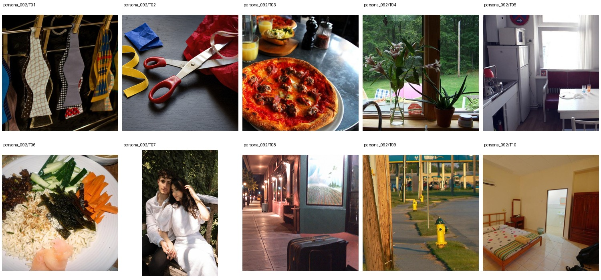

Assistant Food and Beverage Manager at a boutique hotel · Bachelor's degree in Hospitality Management · 未提供数值年龄；按职业与教育背景推定为成年人
Quetzali runs tight dinner-service schedules at a boutique hotel, tracking vendor deliveries, lounge reservations, and last-minute kitchen problems with color-coded checklists. After work she decompresses with hip-hop release news, funny couple skits, puppy videos, and the occasional Mike Tyson legacy clip. Her closet leans practical but stylish, with Target winter hoodies she dresses up for concerts or late-night tacos with her boyfriend.
Remove 2 · Background 4 · Replace 4 · Move 1 · Attribute Modification 6 · Add 2 · Retouch 1 · Restyle 2
上层v3表达个性化编辑请求，底层列出操作、个性化参数及具体解析。125项global均不绑定题材或具体图片，由请求选择；人物基本信息、非global知识和图片保持不变。历史版本仅存internal；长期日常历史尚未构建。
整组图片与基础人物信息（已清理、统一字段）

{
"source": {
"dataset": "bowen-upenn/PersonaMem-v3",
"revision": "7b00a090b35b7293e6efeeb19494207f32b5a9ee",
"source_persona_id": "82",
"path": "backend/82/profile.json",
"raw_sha256": "9f029795e0e90e119bb8e3a2b9aeddb0ca957838f8323d4642e074eda8c6ba7f"
},
"basic_profile": {
"name": "Quetzali Arriaga",
"age": null,
"gender": "cisgender female, heterosexual",
"nationality": null,
"languages": [],
"location": {
"city": null,
"region": null,
"country": null,
"description": null
},
"education": {
"degrees": [
"Bachelor's degree in Hospitality Management"
],
"fields": [],
"institutions": []
},
"occupation": {
"title": "Assistant Food and Beverage Manager at a boutique hotel",
"organization": null,
"industry": null,
"status": null
},
"relationship_status": null,
"summary": null,
"biography": "Quetzali runs tight dinner-service schedules at a boutique hotel, tracking vendor deliveries, lounge reservations, and last-minute kitchen problems with color-coded checklists. After work she decompresses with hip-hop release news, funny couple skits, puppy videos, and the occasional Mike Tyson legacy clip. Her closet leans practical but stylish, with Target winter hoodies she dresses up for concerts or late-night tacos with her boyfriend.",
"hobbies": [],
"personality": {
"traits": [],
"values": [],
"quirks": [],
"big_five": {
"openness": "medium",
"conscientiousness": "high",
"extraversion": "medium",
"agreeableness": "medium",
"neuroticism": "high"
}
},
"additional": {
"social_connections": [
{
"friend_id": "friend_1",
"display_name": "Quique Acosta",
"relationship_depth": "close",
"shared_interests": [
"hip-hop release news",
"funny couple skits",
"puppy videos"
]
},
{
"friend_id": "friend_2",
"display_name": "Marisol Aguilar",
"relationship_depth": "close",
"shared_interests": [
"boutique hotel work",
"vendor deliveries",
"dinner-service schedules"
]
},
{
"friend_id": "friend_3",
"display_name": "Xiomara Avila",
"relationship_depth": "close",
"shared_interests": [
"style creators",
"lounge reservations",
"old buildings"
]
},
{
"friend_id": "friend_4",
"display_name": "Quique Arellano",
"relationship_depth": "acquaintance",
"shared_interests": [
"service-industry stories",
"hotel coworkers"
]
},
{
"friend_id": "friend_5",
"display_name": "Nayeli Anaya",
"relationship_depth": "acquaintance",
"shared_interests": [
"Arizona raptor rescue"
]
},
{
"friend_id": "friend_6",
"display_name": "Osvaldo Almada",
"relationship_depth": "acquaintance",
"shared_interests": [
"kitchen problems",
"service-industry people",
"local restaurants"
]
},
{
"friend_id": "friend_7",
"display_name": "Itzel Aceves",
"relationship_depth": "acquaintance",
"shared_interests": [
"wildlife conservation",
"puppy videos",
"Threads mutuals"
]
},
{
"friend_id": "friend_8",
"display_name": "Quentin Alonzo",
"relationship_depth": "distant",
"shared_interests": [
"Mike Tyson legacy clips",
"hip-hop release news"
]
},
{
"friend_id": "friend_9",
"display_name": "Paloma Arce",
"relationship_depth": "distant",
"shared_interests": [
"family updates",
"old building photos"
]
},
{
"friend_id": "friend_10",
"display_name": "Raquel Amador",
"relationship_depth": "distant",
"shared_interests": [
"wildlife rescue accounts"
]
}
]
}
},
"adult_eligibility": {
"status": "adult",
"basis": "adult_career_and_education_context",
"inferred": true,
"numeric_age_provided": false
},
"persona_id": "persona_092"
}